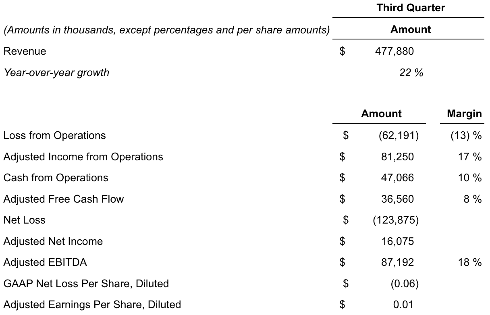

2022年11月7日
作者：Palantir Media
Palantir 重申 2022 财年收入指引，公布 2022 年第三季度收入同比增长 22%
丹佛，2022年11月7日 /美通社/ -- Palantir Technologies Inc. (NYSE:PLTR) 今日公布了截至2022年9月30日的第三季度财务业绩。
Palantir Technologies Inc. 联合创始人兼首席执行官 Alex Karp (Alexander C. Karp) 表示：“本季度的收入增长超出预期，我们预计将在年底强劲收官，尽管美元持续走强。”
2022年第三季度业绩亮点
- 收入同比增长22%，达4.78亿美元
- 美国收入同比增长31%，达2.97亿美元
- 美国商业收入同比增长53%
- 美国政府收入同比增长23%
- 总合同价值（"TCV"）签约额达13亿美元，其中美国 TCV 签约额为11亿美元
- 客户数量同比增长66%，环比增长11%
- 美国商业客户数量同比增长124%，从2021年第三季度的59家增至2022年第三季度的132家
- 运营亏损6200万美元，利润率为-13%，同比改善1000个基点
- 调整后运营收入8100万美元，利润率为17%
- 运营现金流4700万美元，利润率为10%
- 调整后自由现金流为3700万美元，利润率为8%
- 这标志着连续第8个季度实现正向调整后自由现金流
2022年第三季度滚动12个月（TTM）业绩亮点
- 滚动12个月（"TTM"）基础上美国收入达11.1亿美元，同比增长率为38%
- 滚动12个月基础上政府收入达10.2亿美元，同比增长率为20%，公司历史上首次突破10亿美元大关
- 运营现金流为2.38亿美元，利润率为13%
- 调整后自由现金流为2.31亿美元，利润率为13%
2022年第三季度财务摘要

展望
2022全年：
尽管自上季度指引以来受到600万美元的汇率不利影响，我们仍重申19亿至19.02亿美元的收入指引。
- 若不计上述影响，我们预计2022全年收入将在19.06亿至19.08亿美元之间。
我们将调整后运营收入的展望上调至3.84亿至3.86亿美元之间。
2022年第四季度：
在将自上季度指引以来500万美元的汇率不利影响计入后，我们预计收入将在5.03亿至5.05亿美元之间。
- 若不计上述影响，我们预计第四季度收入将在5.08亿至5.10亿美元之间。
我们预计调整后运营收入在7800万至8000万美元之间。
首席执行官致函
Palantir 首席执行官 Alex Karp 致股东的季度信函可通过 Palantir 官网查阅，网址为 https://www.palantir.com/q3-2022-letter。
财报网络直播
太平洋山地时间今天上午6:00 / 美国东部时间上午8:00将举行公开网络直播，讨论截至2022年9月30日的第三季度业绩及财务展望。可通过在线注册参加直播，网址为 https://palantir.events/palantir-2022-q3。活动结束后，可在 https://investors.palantir.com 观看回放。
包含补充财务信息及某些非通用会计准则指标与其最直接可比的通用会计准则指标对账内容的投资者报告，可通过 Palantir 投资者关系网站查阅，网址为 https://investors.palantir.com。
前瞻性声明
本新闻稿及财报网络直播中的声明属于《1995年私人证券诉讼改革法案》“安全港”条款定义的“前瞻性声明”，包括但不限于关于我们的财务展望、产品开发、分销和定价、软件平台的预期效益与应用、商业战略和计划（包括与销售和营销工作、销售团队、合作伙伴和客户相关的战略和计划）、业务投资、市场趋势和市场规模、机遇（包括增长机会）、我们对近期及潜在投资以及与各实体（包括特殊目的收购公司及其他非上市或上市公司）商业合同的预期、我们对宏观经济事件和汇率波动的预期，以及市场定位的声明。这些前瞻性声明自首次发布之日起作出，基于当前的预期、估计、预测和管理层的信念与假设。诸如“指引”、“预期”、“预计”、“应该”、“相信”、“希望”、“目标”、“项目”、“计划”、“目标”、“估计”、“潜在”、“预测”、“可能”、“将”、“也许”、“可以”、“打算”、“应当”等词汇，这些术语的变体或否定形式，以及类似表述，均旨在识别此类前瞻性声明。前瞻性声明受诸多风险和不确定因素影响，其中许多涉及我们无法控制的因素或情况。由于多种因素，我们的实际结果可能与前瞻性声明中陈述或暗示的结果存在重大差异，这些因素包括但不限于我们向美国证券交易委员会（“SEC”）提交文件中详述的风险，包括截至2021年12月31日财年的10-K表年度报告，以及我们可能不时向SEC提交的其他文件和报告，包括截至2022年9月30日财季的10-Q表季度报告。特别是，以下因素可能使我们的实际结果与此类前瞻性声明中表达或暗示的结果产生重大差异：我们成功执行业务和增长战略的能力；我们的现金及现金等价物足以满足流动性需求；市场对我们平台的总体需求；我们增加新客户数量及客户创收的能力；我们将客户合同的部分或全部总合同价值确认为收入的能力，包括客户可用的任何合同期权或受便利终止条款约束的合同期；我们漫长且不可预测的销售周期；我们成功扩充直销团队并成功与第三方执行渠道销售及其他战略计划的能力；我们保留和扩大客户群的能力；我们的运营结果和关键业务指标在未来各季度基础上的波动；业务的季节性；我们平台实施过程的复杂性和耗时性；我们成功开发和部署新技术以满足现有或潜在客户需求的能力；我们使平台更易于安装和使用的能力；我们维持和提升品牌声誉的能力；随着业务增长我们维持和加强企业文化的努力；关于我们的新闻或社交媒体报道，包括但不限于呈现或依赖不准确、误导、不完整或其他破坏性信息的报道；近期或未来的全球宏观经济和地缘政治事件（如俄乌冲突、汇率波动、美国及其他国家通胀或利率上升）对我们公司或现有或潜在客户及合作伙伴业务和运营的影响；以及任何对客户或第三方数据的泄露或访问。
本新闻稿中包含的前瞻性声明仅代表我们在本新闻稿发布之日的观点。我们预计后续事件和发展将导致我们的观点发生变化。我们不承担更新或修订任何前瞻性声明的意图或义务，无论是基于新信息、未来事件或其他原因。不应将这些前瞻性声明视为我们在本新闻稿发布日后任何日期的观点。过往业绩并不必然代表未来结果。
附加定义
就本新闻稿及财报网络直播而言，已完成的交易额和已完成的 TCV 均反映我们与政府和商业客户签订或由其授予的合同的总合同价值。
已完成的交易额和已完成的 TCV 包括现有合同义务，并假定客户行使所有可用的合同期权且合同不终止；然而，我们的大部分合同均受终止条款（包括便利终止）约束，且无法保证合同不被终止或合同期权会被行使。
非通用会计准则财务指标
本新闻稿及随附表格包含以下非通用会计准则财务指标：调整后运营收入（剔除股权激励及相关雇主工资税）、调整后运营利润率、调整后自由现金流、调整后自由现金流利润率、调整后息税折旧及摊销前利润（“调整后 EBITDA”）、调整后 EBITDA 利润率、调整后净收入以及稀释后调整后每股收益（“EPS”）。
我们认为，本新闻稿中所述的这些非通用会计准则财务指标及其他指标有助于评估业务、识别影响 Palantir 业务的趋势、制定商业计划和财务预测，并做出战略决策。我们从这些非通用会计准则财务指标中剔除了股权激励这一非现金支出，因为我们认为剔除该项目能够提供关于运营业绩的有意义的补充信息，并有助于投资者及其他人像管理团队一样理解和评估我们的运营结果。我们剔除了与股权激励相关的雇主工资税，因为其难以预测且不在 Palantir 的控制范围内。
我们的定义可能与其他公司使用的定义不同，因此可比性可能受到限制。此外，其他公司可能不会公布这些或类似指标。此外，这些指标具有一定的局限性，因为它们未包含我们合并运营报表中反映的某些费用的影响。例如，调整后自由现金流不反映我们未来的合同义务或特定时期现金余额的总增加或减少。因此，应将我们的非通用会计准则财务指标视为对通用会计准则指标的补充，而非替代，也不能孤立看待。
我们通过提供这些非通用会计准则指标与最可比的通用会计准则指标的对账表来弥补这些局限性。我们鼓励投资者及其他人全面审阅我们的业务、运营结果和财务信息，不依赖任何单一财务指标，并将这些非通用会计准则指标与最直接可比的通用会计准则财务指标结合看待。
本新闻稿末尾附有本新闻稿中所用各项非通用会计准则财务指标与最可比通用会计准则财务指标的对账表。由于未来可能发生的对账项目（如股权激励及相关雇主工资税）存在不确定性和潜在可变性，且其影响可能重大，因此在不付出不合理努力的情况下，无法按前瞻性基准提供非通用会计准则指引指标与相应通用会计准则指标的对账。
就本新闻稿及财报网络直播而言，基于本期美元（“USD”）总体走强及对2022财年剩余时间的预期，我们估算了汇率影响，方法是将（i）本期首月有效汇率与本影响期随后各月实际或预期有效汇率之间的差额，应用于本影响期内每个月的实际或预计收入。
可用信息
Palantir 利用其投资者关系网站作为披露重大非公开信息及履行其在《公平披露条例》下披露义务的渠道。因此，投资者除关注我们的新闻稿、SEC 文件、公开电话会议和网络直播外，还应监控 Palantir 的投资者关系网站。
关于 Palantir Technologies Inc.
奠基未来的软件，今日即刻交付。更多信息请访问 https://www.palantir.com。
联系方式
投资者关系
investors@palantir.com
媒体
media@palantir.com